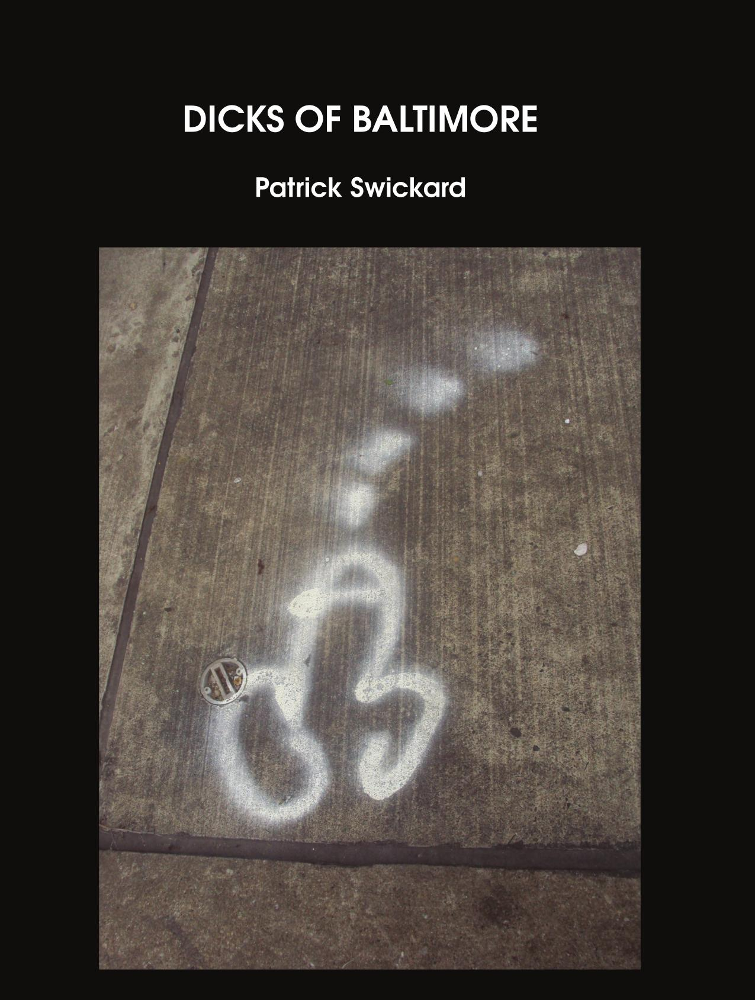
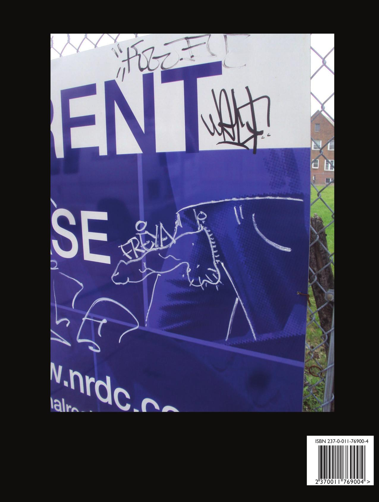

Dicks of Baltimore
Patrick Swickard
8.5"x11" paperback, 90 pages
Like the heather of the Highlands, mine is tipped with flecks of purple
With a head as wise as Solomon, although shaped like a turtle
It wears a flesh-tone roll-neck and the neck goes up and down
It comes out in the evenings and on Friday paints the town
Obsessively, compulsively, it only wants one thing
To fill your chosen orifice with ropes of pearly string
Delivering its message to your womb or to your tongue
And then going slack and flaccid when its pressing work is done
In witty conversation, by drip or intravenous
I drop everything you didn't want to know about my penis
- Momus
Just as it says on the tin—full page images of graffiti dicks and dongs bursting forth from the page in full color in an absolutely punishing 8.5”x11” format. Great for people who like to look at crudely drawn pictures of dicks—or occasionally just the word DICK in various contexts, sexual or otherwise!